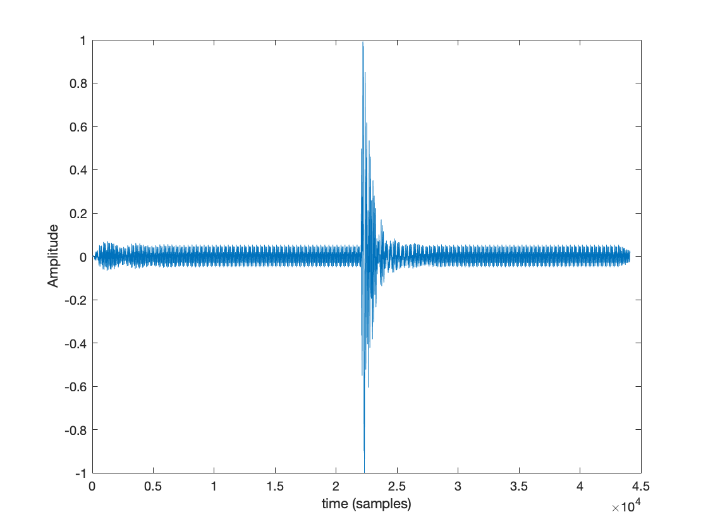

Introduction and Background
There are many different ways to synthesise sound, from adding sine tones together (additive synthesis) to using oscillators as ways to modulate the sound (FM synthesis). However, these methods have a few issues, namely that sound synthetic and lack the warm related to acoustic instruments and they’re harder to control [1].
Physical modelling is different from these ways of synthesis, instead of focusing on sine waves, it models the system based on real-world equations. It produces a more natural sound, and allows the user to use more meaningful ways to define it. The method of physical modelling synthesis that will be used is digital waveguide (DWG) synthesis. This works by modelling wave propagations found in tubes or strings using multiple delay lines.
Voice synthesis is different from other types of synthesis, the voice is a very rich and expressive sound source, so this adds more challenges. Due to the rich variety of the voice, there are numerous ways to synthesise the voice, most models start by looking at the vocal tract as a 17cm tube with the lips and mouth at one end and the glottis at the other (Figure 1).
The vocal tract can be represented using the source-filter model where be glottis is the source, and the larynx and lips are the filters changing the way the sound is produced. Using the Kelly-Lochbaum vocal tract model we can split it up into multiple sections, each section has a specific area which changes relating to the vowel being produced (Figure 2). We can then model the vocal tract as a series of standard digital waveguides. This idea was used by Kelly-Lochbaum in collaboration with Max Matthews to create the first synthesis of singing voice on an IBM computer (Video 1). From this starting point the technology advanced so that today it is possible to use AI to create custom voices using software such as resemble.ai [2].


Code Design
The code is based on the digital waveguide vocal model and the work done in Labs. It is based of the work by Kelly Lochbaum, and implements the vocal tract as a series of cylindrical tubes with differing impedances, at the intersections between each tube it uses a Kelly Lochbaum scattering junction [6]. Figure 3 shows the 1D model and details how the area components (A) relate to the impedance (Z) with the scattering junctions (J) being between each section.
The code produces diphthongs, monophthongs, plosives as well as allowing the use of noise, LF and LF with Vibrato as the excitation. Plosives can be inserted at any pint during the vowel production, and diphthongs can be produced between any two monophthongs. This can produce some diphthongs that would not naturally be produced by the human voice. The table below highlights all the monophthongs (vowels) the system can produce, the other table highlights diphthongs the system can produce with the two variables needed to make it sound.
Clicking on the IPA representation will link to the examples further down the page.
Development
When developing the model, the place to start would be looking at the excitement of the system. The system allows Liljencrants-Fant (LF) glottal flow model to synthesise the voice, the system reads in the two LF inputs, one with vibrato and one without, provided in the lab and uses it as excitement for the system. In addition to the LF inputs, the system allows 1 second of noise to be used as an excitement, below are the experiments with different types of noise, unit impulse and LFs. The phomeme being synthesised is a.
| Excitement Type | Audio |
|---|---|
| Unit Impulse | |
| LF | |
| LF with Vibrato | |
| White Noise | |
| Pink Noise | |
| Brown Noise |
After completing the lab and implementing the different excitement types, the next stage was to focus on was creating plosives. Plosives are as as simple as stopping the sound midway through creating it. The code works by creating an envelope that goes from 0 to 1 over 1/8th of the total samples. This envelope can then be inserted at any point during the system with ones filling in the remaining space. The mouth end is then updated with the value of the envelope multiplied by the segment diameter.
% Plosive
plosiveDuration = round(nSamples/8);
plosiveEnv = linspace(0,1,plosiveDuration);
plosiveBefore = ones(1,(PlosiveStartPosition));
plosiveAfter = ones(1,(nSamples-PlosiveStartPosition-plosiveDuration));
plosiveLine = [plosiveBefore plosiveEnv plosiveAfter];
...
...
if plosive
plo = plosiveLine(n);
A(44) = plo*A(44);
end
The table has audio examples of plosives at different positions, the excitation type was “LF” and the vowel synthesised was ε (bird).
| Plosive Position | Audio | Output Graph |
|---|---|---|
| 0.00 |

|
|
| 0.25 |

|
|
| 0.50 |  | |
| 0.75 |

|
|
| 1.00 |

|
After creating plosives and excitation, the next feature to look at was creating diphthongs. These are created by transitioning from one monophthong to another mid-way through. The code allows the user to specify two monophthongs, and transition between the two. This allows the user to create sounds that might not be normally produced.
% Dipthong transitions
transition = linspace(0,1,nSamples);
transition2 = 1 - transition;
...
...
if dipthong
% for when we're using dipthongs we need to move from one vowel to
% the next over time
for j=1:nSegments
A(j) = transition2(n)*firstVowel(j) + transition(n)*secondVowel(j);
end
else
% Select a vowel for synthesis
for j=1:nSegments
A(j) = firstVowel(j);
end
end
In each of the spectrograms the transition between the formants are shown. At the start they all are in the same position and by the end they’ve all transitioned to their new vowel. This is further investigated in the Analysis section.
User Configurable Code
Within the code users can specify a few different parameters. Figure 4 shows the user controllable elements within the code and the table below details each parameter and what it does.
| Variable | Type | Description |
|---|---|---|
| saveFile | Boolean | Setting this to true will enable saving of the audio file, and setting it to false will disable saving. |
| graphs | Boolean | Setting this to true will enable displaying of graphs, and setting it to false will disable graphs being displayed. |
| plosive | Boolean | Setting this to true will enable plosives, and setting it to false will disable plosives. |
| PlosivePosition | Float | Setting this to a number between 0 and 1 when plosive is true will determine the start position of the plosive. NOTE: plosive MUST be set to true inorder for this to function. |
| Excitation | String | Specifies the excitiation type, this can be "LF","LFVib",and "Noise". In addition to these it can also be: "WhiteNoise","PinkNoise",and "BrownNoise". |
| firstVowelString | String | Specifies which vowel to synthesise, either as a first vowel in a diphthong or the only vowel. |
| dipthong | Boolean | Setting this to true will enable diphthongs, and setting it to false will disable diphthongs. |
| secondVowelString | String | Specifies which vowel to synthesise as the end of the diphthong. NOTE: dipthong MUST be set to true inorder for this to function. |
Audio Examples
| Name | Excitement Type (Bottom Row with Plosive) | ||
|---|---|---|---|
| LF | LF with Vibrato | Noise | |
| a | |||
| æ: | |||
| ε | |||
| ɪ | |||
| o | |||
| ɵ | |||
| u | |||
| ʊ | |||
| ʌ | |||
| Diphthongs | |||
| aʊ: | |||
| aɪ: | |||
| εɪ | |||
| oɪ | |||
Analysis
When analysing speech there are different approaches, the main one and the one I’ll be focusing on is looking at formants. Vowel formant frequencies are the resonant frequencies from the filtering effect of the vocal tract. The first thing to look at is the Formant 1 (F1) and Formant 2 (F2) values, when plotted against each other these values create a map of where the vowels are produced in the mouth.
In Figure 5 the red data points are the formants of the synthesised vowels and for comparison the blue data points are from G. E. Peterson and H. L. Barney and are the average vowel formants for men [7]. Formant values for synthesised vowels were calculated using Praat. From the plot we can see that the data points are close to that of Peterson and Barney, the table below summarises the percentage difference between the synthesised vowels and the average formants for men.
| Name | Synthesised | Peterson & Barney | Percentage Difference | |||
|---|---|---|---|---|---|---|
| F1 (Hz) | F2 (Hz) | F1 (Hz) | F2 (Hz) | F1 (Hz) | F2 (Hz) | |
| ɪ (i) | 232.83 | 2416.48 | 270 | 2290 | 13.76% | 5.52% |
| ʌ (V) | 710.38 | 1336.91 | 640 | 1190 | 11.00% | 15.25% |
| ʊ (U) | 393.33 | 931.71 | 440 | 1020 | 10.61% | 8.66% |
| æ: (ae) | 667.00 | 1947.38 | 660 | 1720 | 0.15% | 13.22% |
| a (a) | 796.82 | 1197.74 | 730 | 1090 | 9.15% | 9.88% |
| u (u) | 253.38 | 849.26 | 300 | 870 | 15.54% | 2.38% |
The data can also be visualised using frequency responses of the phonemes see figure 6.
Higher Formants
In addition to the first two formants, more formants are present in the synthesised phonemes, the closer the formants are to the “idea” or “average” values the more likely the model is to sound realistic. Looking at the third formant we find that the model isn’t very accurate with the majority of third formant values being around 20% different from the average from the Peterson and Barney values.
| IPA | Peterson & Barney | Synthesised | Percentage Difference |
|---|---|---|---|
| F3 (Hz) | F3 (Hz) | F3 | |
| a: | 2440 | 2856.36 | 17.06% |
| æ: | 2410 | 2393.25 | 0.69% |
| ε | 2480 | 2682.11 | 8.15% |
| ɪ | 2550 | 3425.45 | 34.33% |
| o | 2410 | 2375.42 | 1.43% |
| u | 2240 | 2554.76 | 14.05% |
| ʊ | 2240 | 2717.75 | 21.33% |
| ʌ | 2390 | 2867.5 | 19.98% |
Diphthong Formant Anaylsis in Praat
The best way to look at if the synthesised diphthongs are behaving in the correct manner is by looking at the formants. Collecting the start and end F1 and F2 values of the diphthong and comparing against the F1 and F2 monophthong values will determine the model’s accuracy. All the formant values are calculated using praat.
| Name | Diphthong | Monophthong | Difference | ||||
|---|---|---|---|---|---|---|---|
| F1 (Hz) | F2 (Hz) | F1 (Hz) | F2 (Hz) | F1 | F2 | ||
| aʊ: | a | 790.91 | 1206.72 | 796.82 | 1197.74 | 0.74% | 0.74% |
| ʊ | 434.08 | 934.81 | 393.33 | 931.71 | 10.34% | 0.33% | |
| aɪ: | a | 807.64 | 1199.06 | 796.82 | 1197.74 | 1.35% | 0.11% |
| ɪ | 272.49 | 2334.52 | 232.82 | 2416.48 | 17.04% | 3.38% | |
| εɪ | ε | 514.77 | 1612.94 | 525.21 | 1581.15 | 1.99% | 2.01% |
| ɪ | 231.66 | 2385.29 | 232.82 | 2416.48 | 0.49% | 1.29% | |
| oɪ | 0 | 658.56 | 1089.47 | 661.30 | 1065.32 | 0.41% | 2.27% |
| ɪ | 258.55 | 2331.02 | 232.82 | 2416.48 | 11.05% | 3.56% | |
From completing the diphthong analysis in praat, a few conclusions can be drawn. The majority of the formants values for the first phoneme in the diphthong are accurate within 2%. Then for the second phoneme the majority of the first formant (F1) are less accurate, averaging around 12% accuracy. This could be due to the large amount of movement needed from the first phonemes to the second. The second formant values are relatively stable across both phonemes and have an error of less than 5%. From this it’s evident that a better transition is needed to improve the accuracy of the first formant values when they have to make a large transition.
Evaluation and Further Development
In the future it would be good to extend the model to produce more phonemes and possibly even combine voices to create a “virtual choir”. The model could also be developed further adding additional boundary conditions and expanding to use different LF excitement or excitement types in combination. It could also be improved by increasing the spatial sampling resolution which would improve the simulation of formants and create a more realistic vowel synthesis. The model could also be expanded to 2D or even 3D. Moving to more dimensions allows mouth features to be modelled and a much more natural sounding model.
The implemented extension of the model was to add diphthongs and plosives, however the user can also explore different excitation types and change the start position of plosives. The model created provided a strong starting point to model the vocal tract creating a reasonably accurate outcome.
Word Count : 1625
References
- [1] "The Project - NESS", NESS, 2021. [Online]. Available: https://www.ness.music.ed.ac.uk/project.
- [2] "AI Generated Voices ~ Resemble AI", Resemble AI, 2021. [Online]. Available: https://www.resemble.ai/.
- [3] Jiggy. "Daisy Bell - IBM 7094 (1961)" YouTube, May. 25, 2015 [Video file]. Available: http://www.youtube.com/watch?v=yIwhx3NQSLg.
- [4] Loy, G., & Chowning, J. (2007). Sound Synthesis. In Musimathics, Volume 2: The Mathematical Foundations of Music (pp. 363-452). Cambridge, Massachusetts; London, England: The MIT Press.
- [5] B. Story and I. Titze, "Parameterization of vocal tract area functions by empirical orthogonal modes", Journal of Phonetics, vol. 26, no. 3, pp. 223-260, 1998. Available: doi:10.1006/jpho.1998.0076
- [6] J. Mullen, D. Howard and D. Murphy, "Waveguide physical modeling of vocal tract acoustics: flexible formant bandwidth control from increased model dimensionality", IEEE Transactions on Audio, Speech and Language Processing, vol. 14, no. 3, pp. 964-971, 2006. Available: 10.1109/tsa.2005.858052
- [7] G. Peterson and H. Barney, "Control Methods Used in a Study of the Vowels", The Journal of the Acoustical Society of America, vol. 24, no. 2, pp. 175-184, 1952. Available: 10.1121/1.1906875.